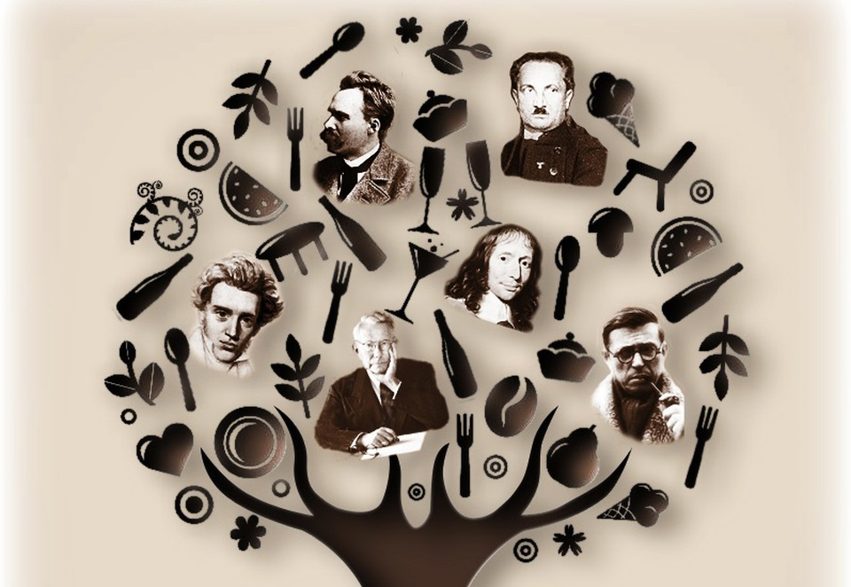
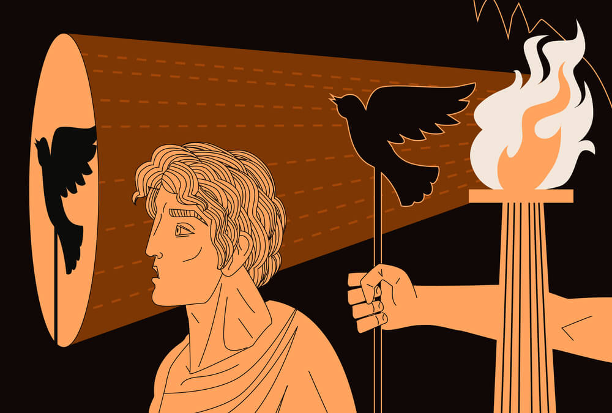
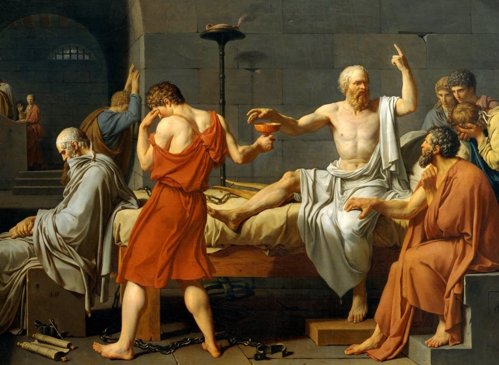

Triết học là bộ môn nghiên cứu những vấn đề căn bản, trừu tượng và phổ quát nhất về con người và thế giới, như tồn tại, tri thức, chân lý, đạo đức và ý thức. Nó giúp con người định hình tư duy phản biện, khám phá bản chất sự vật và hình thành thế giới quan sâu sắc. Triết học không chỉ là một lĩnh vực học thuật mà còn là kim chỉ nam cho tư duy và hành động. Bằng cách đặt câu hỏi "Tại sao?" và "Thế nào là đúng?", triết học mở ra khả năng nhìn nhận thế giới từ nhiều chiều hướng khác nhau và phát triển khả năng lập luận logic, phản biện và sáng tạo.
Lịch sử triết học ghi nhận sự phát triển đa dạng của nhiều trường phái: từ duy vật và duy tâm cổ điển, đến hiện sinh, hậu hiện đại và phân tích trong thời hiện đại. Duy vật coi vật chất là nền tảng của thế giới, trong khi duy tâm xem ý thức là bản thể gốc. Chủ nghĩa hiện sinh tập trung vào tự do cá nhân và sự hiện diện trong thế giới vô nghĩa, còn triết học phân tích chú trọng cấu trúc ngôn ngữ và logic. Mỗi trường phái phản ánh một cách nhìn độc đáo về thế giới, đồng thời phản ánh bối cảnh lịch sử, xã hội và tư tưởng của thời đại. Việc tiếp cận triết học thông qua các trường phái giúp sinh viên có cái nhìn hệ thống và phong phú hơn về lịch sử tư tưởng nhân loại.
Nhận thức luận là một ngành của triết học chuyên nghiên cứu bản chất, nguồn gốc và giới hạn của tri thức. Câu hỏi cốt lõi của nhận thức luận là: "Làm sao ta biết điều ta biết là đúng?" Tri thức có thể được đạt được qua cảm giác, lý trí, kinh nghiệm hay mặc khải? Nhận thức luận phân biệt giữa niềm tin, chân lý và sự biện minh, đồng thời khảo sát những phương pháp nhận thức đáng tin cậy. Trong thế giới hiện đại, nhận thức luận còn đóng vai trò quan trọng trong khoa học, giáo dục và trí tuệ nhân tạo, khi con người đối diện với lượng thông tin khổng lồ và cần phân biệt giữa tri thức thực và ngụy tạo.
Triết học đạo đức đặt ra những câu hỏi cốt lõi: "Thế nào là điều đúng?", "Thế nào là một cuộc sống có giá trị?". Nó phân tích các hệ thống đạo đức như chủ nghĩa vị lợi, nghĩa vụ luận và đạo đức đức hạnh, từ đó đánh giá hành vi con người. Đạo đức học không chỉ mang tính lý thuyết mà còn định hướng thực tiễn – từ cá nhân đến xã hội, từ chính trị đến môi trường. Trong thời đại ngày nay, việc đặt lại các giá trị đạo đức truyền thống là cấp thiết, khi con người đối mặt với các vấn đề đạo đức mới như quyền riêng tư số, đạo đức sinh học, công bằng trí tuệ nhân tạo và tính bền vững toàn cầu.